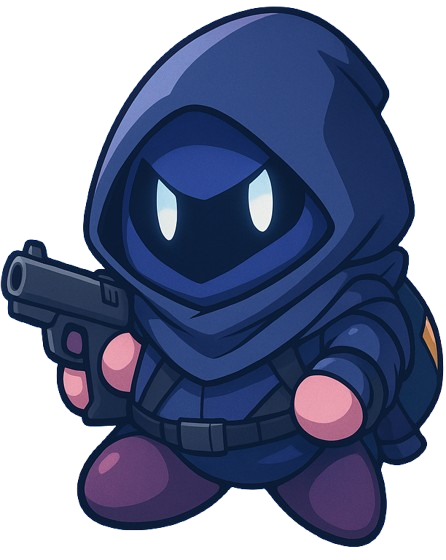
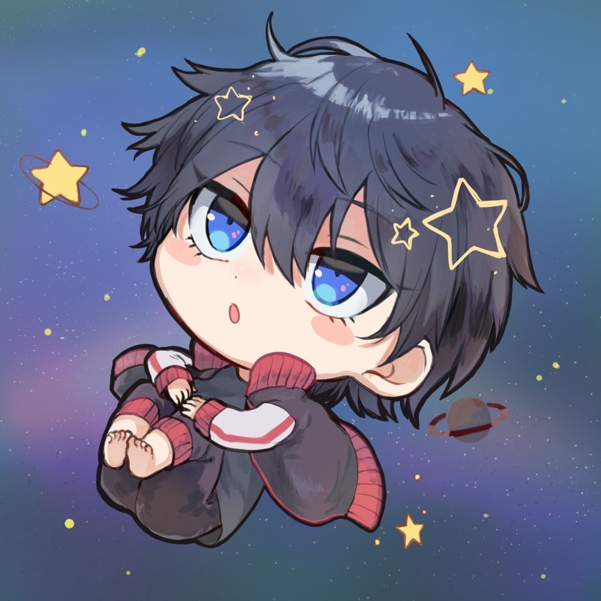
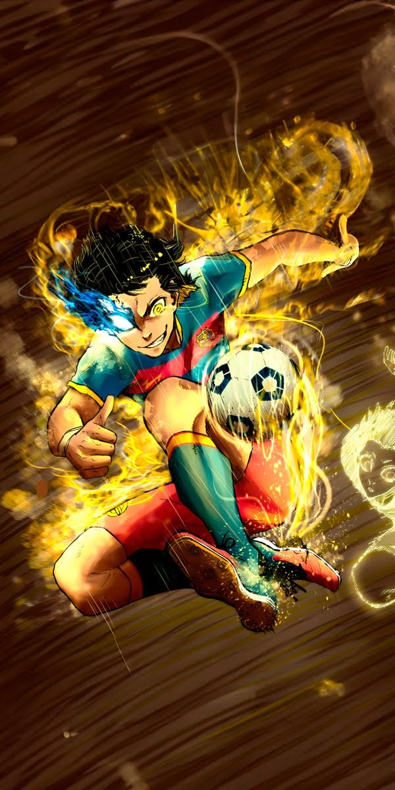
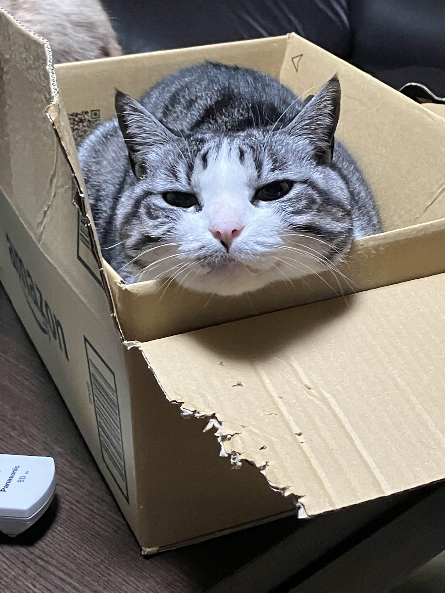
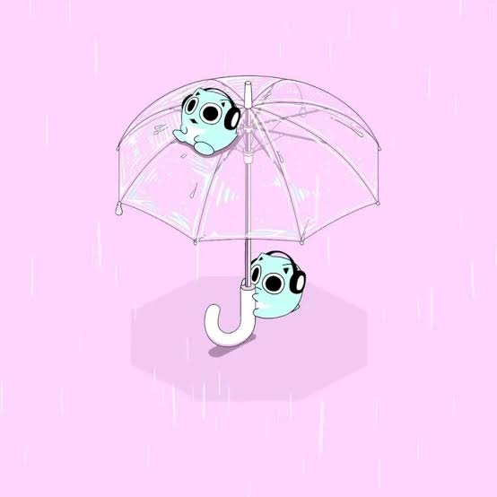
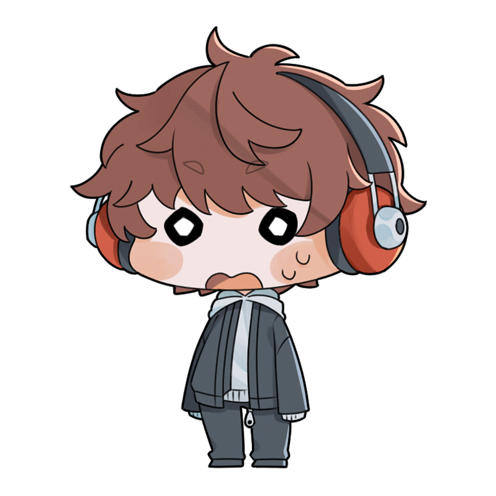

VALORANTの最高のゲーム仲間と共に、勝利への道を切り開こう
ぽよぽよげーみんぐは、VALORANTを愛するプレイヤーたちが集まるdiscordメンバーの中から結成されたpremierの 出場チームです。私たちは技術の向上だけでなく、 友情とチームワークを大切にしています。

テクおじ / Controller

めんへら / Flex

義務 / Duelist

禁酒 / Duelist

オネェ / Flex

2人目のはやと / Initiator
VALORANTの座学を学び、スムーズな連携を目指そう！実際に試合で出来るかは分からないけどね！
みんなでわいわい楽しもう！
コンペティティブで一緒にプレイしませんか？ 不定期で募集していますが、ほぼ毎日1~2名ほど飛び入り参加があります。詳しくはXを確認するか、メッセージを送信してください。